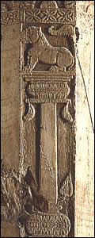

Details from the pillar face
The purnaghata is the urn of plenty. In this scene, vines and lotuses grow out of its neck. At the top of this pillar is a column with a lion on top.
The lion was a symbol of strength and power. Sculptures of lions were found at the Amaravati site and are thought to have graced the four gateways.
|